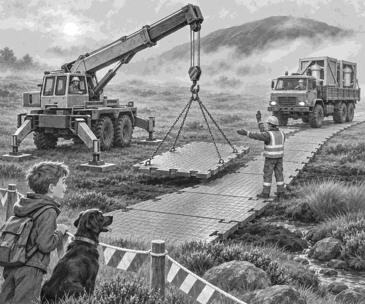

Rain had soaked Blackbird Moor.
Two new water filters had to reach the hill station.
They rode on the back of a huge cargo truck.
Tom sat in the escort truck. Scout the black Labrador sat beside him.
Up ahead, the track turned dark and soft.
The lead driver stopped.
“That peat could swallow our wheels,” she said.
Tom looked at the load. The filters were too heavy to carry by hand.
Then the crane truck opened its wide legs.
On its back sat a stack of giant road mats.
“We will take the road with us,” said the crane driver.
The crane lifted the first mat.
Everyone stood outside the marked work area.
The mat dropped gently onto the peat.
Clunk!
Another mat locked beside it.
Clunk! Clunk!
Hauling fact: Wide road mats spread a truck’s weight over more ground. This helps stop the wheels sinking into soft soil.
The crane truck rolled onto the new road.
It laid two more mats ahead.
The cargo truck followed in low gear.
Its tyres stayed high and firm.
Halfway across, the last mat would not sit flat.
Tom pointed to a stone hidden under one corner.
The team lifted the mat. They moved the stone and tried again.
This time it joined the road with a neat click.
“Slow and straight,” called the guide.
The big truck rumbled over the final mat.
Scout wagged his tail so hard that it thumped the seat.
At the hill station, the crew unloaded both filters.
Then the crane truck picked up every mat on the way home.
Tom looked back at the empty moor.
The road had vanished.
But the mission was complete.